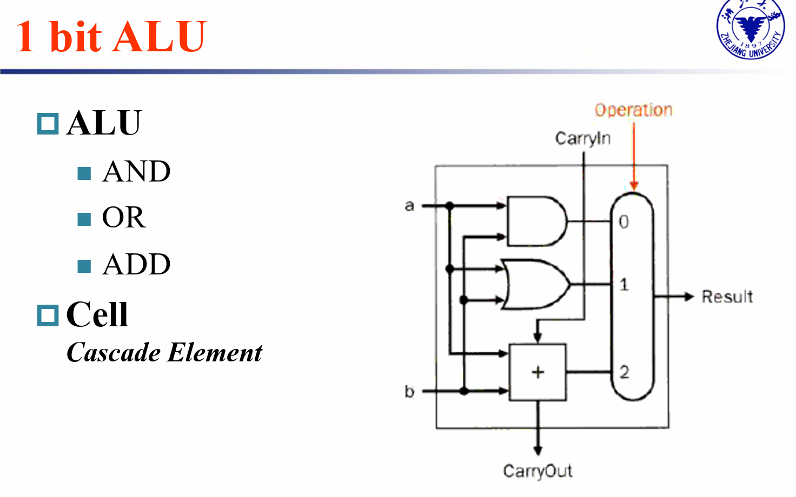

计算机组成
Chapter3 Arithmetic for Computer
Numbers Representations
Note
数： - unsigned - signed - One's complement: n-bits ---> \([-(2^{n-1}-1), 2^{n-1}-1]\) - Two's complement: n-bits ---> \([-2^{n-1}, 2^{n-1}-1]\) - sign Magnitude: n-bits ---> \([-(2^{n-1}-1), 2^{n-1}-1]\)
Arithmetic
整数运算
整数在计算机中的表示形式、运算原理
回顾
反码、补码、原码是针对有符号数提出的，使有符号和无符号数运算方式相同
 !!!
!!!
 怎么发现 Overflow ?
- Double sign-bits: 符号位 和 符号位前一位(进位)
怎么解决 Overflow?
怎么发现 Overflow ?
- Double sign-bits: 符号位 和 符号位前一位(进位)
怎么解决 Overflow?

Addition & Substraction
Note
Half
Full
 !!! Carry look-ahead adder (CLA)
上面我们实现的全加器为Ripple Carry Adder(RCA),若要使它拓展为n位数的运算，delay也会扩大n倍(串行逻辑)；显然，这种实现方式比较慢
那么如何加速呢？
课本指出，RCA 缓慢的重要原因是后一个 adder 需要等前一个 adder 的 carry 结果。那么考虑能不能找到Carry的一个新方程，摆脱对前面结果的依赖
参考
4位RCA：2*4+1=9级时延
4位CLA： 1+2+1=4级时延
16位串行CLA（4*4位CLA）1+2*4+1=10级时延
16级组间超前CLA(输入—PG—PGM—CLU—CLU—异或门—输出)：1+2+2+2+1=8级时延
!!! Carry look-ahead adder (CLA)
上面我们实现的全加器为Ripple Carry Adder(RCA),若要使它拓展为n位数的运算，delay也会扩大n倍(串行逻辑)；显然，这种实现方式比较慢
那么如何加速呢？
课本指出，RCA 缓慢的重要原因是后一个 adder 需要等前一个 adder 的 carry 结果。那么考虑能不能找到Carry的一个新方程，摆脱对前面结果的依赖
参考
4位RCA：2*4+1=9级时延
4位CLA： 1+2+1=4级时延
16位串行CLA（4*4位CLA）1+2*4+1=10级时延
16级组间超前CLA(输入—PG—PGM—CLU—CLU—异或门—输出)：1+2+2+2+1=8级时延
1

Extended
Extended
浮点数运算
浮点数的表示
sign, significand (significant digit), exponent
More bits for significand: more accuracy
More bits for exponent: increases the range

那么各部分的值怎么计算呢？

注意 significand 有 hidden 1，exponent 有 bias
Example：

那么浮点数表示的范围和精度如何？


注意 exponents 0000...00 and 1111...11 reserved

上图用十进制小数点后几位 表示精度

Addtion

注意 按照以下4步